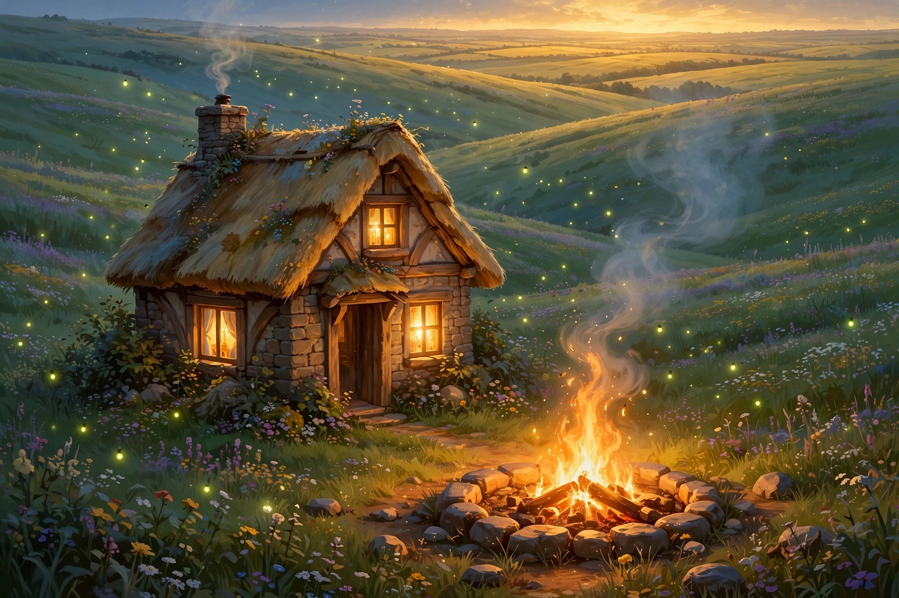

Moor · a Moor-built game · blueprint v1
A persistent cozy world for the Moor platform. Your account is a deed to a piece of living land. Shape it, grow it, build on it — and open your door to travelers. The world remembers.

The game is the account pitch. No account, no hearth — you can wander the wilds, but nothing persists under your name. Light your fire, and the world remembers you forever.
Land ownership is account-bound, permanent, and visible. One account, one hearth, forever.
The only status is Warmth. No combat, no PvP, no leaderboards. Kindness is the leaderboard.
Everything meaningful takes days. Five-minute sessions, rewarded returns. The game respects your time.
Nothing a deedholder makes is ever deleted. Guest books, gifts, seed vaults — permanent.
Every figure below is a locked blueprint decision — changeable only through a new funnel run, never silently.
Every board is broken down the same way: purpose · inputs/outputs · dependencies · locked specs · quiz questions with locked answers · pipeline checks. Nothing is a slideshow — it's all here, on the board.
The first attempt at "occupying a world" was a JSON file claiming one — bureaucracy, not occupation. Discarded. This is the real blueprint: when you travel to Luria Prime (S02-SYS02-P04), you arrive in HEARTH. A planet is five things — canonical data, a body in the verse, a destination, a surface, a story — and HEARTH takes all five. Design doc: HEARTH-TAKEOVER.md.
HEARTH has its own quiz funnel — the same sealed mechanism as the main build funnel, pointed at game design. Every component above carries its questions; the funnel itself is a component (board 23). The flow:
Locked answers are versioned, never silent: a lock changes only through a new funnel run. The builder (Moor) proposes answers; Sebastian disposes.
Proof, not promises. When the game is built, every component ships with its checks from the boards above — plus three kindness checks that are first-class citizens, not footnotes:
The build fails if any path — store, ad, shortcut — can raise Warmth. Status is earned or it is nothing.
Pause, sleep, wait — never wither. The sim is fuzzed with 30-day absences; the garden must be alive on return.
Sync conflicts, offline queues, crashed sessions — the gift queue is tested until a gift cannot be destroyed.
The bar, from the grass lesson: pixel proof, not proxy metrics. Buffers lie; pixels don't. And the final gate is always a real iPhone in Sebastian's hands.